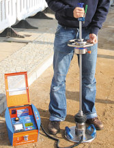

Gesunder Menschenverstand ist jedoch sehr selten. Und so wundert es nicht, daß einige Jahre auch nach dem industrieberatenen Chemiewaffenangriff die Sache total in die Hose gegangen ist:
 |
Mittelalterlicher Keller in Ziegelbauweise am Ende einer Bauchemie-"Trockenlegung" mittels Horizontalisolierung,
Sperrmörtelverfugung, äußerer Abdichtung und Oberflächenbehandlung mit "Sanierbaustoffen". Die dunklen Bereiche betonen die Salzverseuchung und kondensatverstärkte Feuchtekonzentration an Boden und Wand als Reaktion auf die mit "Kiesel-"Injektagelösung, "Sperrmörtel", "Spezialschlämme", "Mauersalzsperre", usw. eingebrachten Bauchemieprodukten. Salze laut chem. Analyse: Ettringit (Treibmineral), Kalisalpeter, Gips, Natriumcarbonat, Trona ... Auch alle weiteren Flächen der Raumhülle (Boden, Wand und Gewölbeflächen) sowie der Mittelsäule sind extrem salzverseucht und bröseln. |
 |
Aus den Injektionsbereichen und darunter wachsen zentimeterlange Salzwattebärte. Die
Oberflächen des Ziegelkellers bröseln, stauben, schuppen und scherbeln ab. Totalzerstörung der Architekturoberflächen. Hier haben die eingebrachten Chemiesuppen wieder einmal ganze Arbeit geleistet. |
 |
Der Mauerpfeiler des Durchgangs löst sich in seine Bestandteile auf. Die Salzsprengung hat schon Kubikdezimeter der rechten Kante herausgebrochen. |
 |
Dem Boden unter der "Horizontalisolierung" entwachsen mächtige pestbeulenartige Salzgebirge. Abschuppungen des Bestands wie an den Wänden. |
All das passierte erst einige Zeit nach der "Sanierung".

Noch eine vitrinäre Trockenleger-Messeinstallation von der denkmal (beachte "offizielle" Kleinschreibung!) 2004:
Es gibt wohl keine grünfettere Spielwiese für die Baubranche als die feuchte Wand.
Der überragenden Expertenintelligenz der Planer, Denkmalpfleger und Bauherrn sei Dank.
Technisch richtige und wesentlich kostengünstigere, dafür zielführende Maßnahmen wären hier beispielsweise gewesen:
1. Anheben des Temperaturniveaus der ggf. kondensatgefährdeten (soweit nicht hygroskopisch auffeuchtenden versalzten) Bauteilflächen mittels Hüllflächentemperierung.
2. Trockenreinigung des Bauwerks von ggf. vorhandenen bauschädigenden, ausblühenden Salzen, Austreiben der noch verbliebenen Schadsalze mittels Naßtechnik
3. Oberflächenreparatur der ggf. entsalzten tragfähigen Flächen, die dabei nicht abgeschlagen werden müssen, durch Kalktechnik, ggf. vorher Festigung mürber Bereiche mit Kalkbindemittelzuführung
Keinesfalls treibmineralfördernde Zement- und Traßmörtel, die für den Großteil der neuen Salzbelastung verantwortlich sein können! "Sanierputz" nach WTA und vergleichbarer Bindemittelzusammensetzung heißt eben auch Ja zu Treibmineralbildung, zementärer Festigkeit und hoher Wärmedehnung (Untergrundablösung mit Schollenbildung) sowie hydrophobiebedingter Trocknungs- und Salzblockade unter dem Sperrputz.
4. Gegebenenfalls auch Verzicht auf Vertikalabdichtung außen mit Dichtschlämme. Sie klappt sowieso in vielen Fällen gar nicht. Dichten Sie mal einen historischen Mauerfuß mit klüftiger Oberfläche am Fundamentübergang zum Lager schwarz ab - gem. DIN. Viel Spaß! Und gut Zeit für die zur perfekten Abbindung notwendigen Nachbefeuchtungs- und Trocknungszeiten der Untergrundvormörtelung. Auch das abschnittsweise Arbeiten bei vorgeschriebener Erdbermenausbildung ist dann ein wahrer Graus.
Alternative: z. B. Reparatur ggf. undichter Grundleitungen bzw. Kanalsanierung / Grundleitungssanierung bzw. Instandsetzung der gebrochenen Rohre / Rohrbrüche / Kanalteile durch lokalen Austausch der nach Voruntersuchung (optische Kanalinspektion mit wasserdichter Endoskopkamera (Kanalkamera, Inspektionskamera, dazu ergänzende Dichtheitsprüfung von Abwasserleitungen nach DIN EN 1610, da optische Prüfung / Videoinspektion oft bestimmte Mängel nicht sicher aufdeckt / entdeckt mit Druckwasser / Wasserdruck: dabei wird an Tiefpunkt ein Leitungsverschluß mit einer pneumatischen / aufblasbaren Rohrblase dicht verschlossen, danach das Rohr mit Wasser / Luftdruck befüllt und auf Verluste geprüft) nachgewiesenen Leckagebereiche / Kanalleckagen / Leitungsleckagen und / oder Ausfräsen evtl. eingewachsener Pflanzenwurzeln / Baumwurzeln, die durch Brüche, Risse oder defekte Muffen den Weg ins Kanalsystem / Kanalrohr / die Grundleitung gefinden haben, danach Verschluß aller Leckagen, um Fremdwassereintritt / Fremdwasserinfiltration und Austritt von Schmutzwasser / Abwasser in das Kanalsystem zu verhindern, mittels Schlauchlinerverfahren (Schlauchlining / Inliner-/-Kurzliner-Verfahren: Gesamt- oder Teilstück-Auskleidung mit Partliner der defekten geschädigten Kanalrohre mit einem druckluftverpreßten Kunststoffschlauch-System, dabei kommen zum Einsatz z.B. lichterhärtende Glasfaser-Schlauchliner, bei denen ein photoreaktives UP-Harz als Reaktionsharz bei Belichtung mit einem UV-Lampen-System für die Verklebung und UV-Lichtaushärtung des Schlauchliners sorgt, oder auch Schlauchliner aus Polyesternadelfilz mit Konfektionierung aus Zweikomponenten-Polyesterharz, -Vinylesterharz oder -Epoxidharz) für gerade Leitungsabschnitte, priesgünstiges Flutungsverfahren mit geeigneten Zweikomponenten-Abdichtstoffen bei verzweigten Leitungssystemen mit Leckagen und / oder Haarrissen (Flutung Kanalsystem mit Systemkomponente 1, Abpumpen, Flutung mit Systemkomponente 2, die nun mit dem im Leckagebereich verbliebenen Rest der Systemkomponente 1 aushärtet und damit den Kanal sicher und steinhart abdichtet) oder eben systemgerechte / bestandsgerechte Kompletterneuerung mit Steinzeugrohren, Betonrohren, Gußrohren entsprechend Befund und bedarfsweise geordnete Abführung von eindringendem Oberflächenwasser.
Notfalls "Abdichtung" des Fundamentmauerwerks oder nur der Baugrubenabdeckung mit Ton. Preiswert, jahrhundertelang bewährt, langzeitdicht, minimalste Restmengen kann ein Bau mit Kalkputzoberflächen gut verkraften und an die Luft abgeben. Deponieton bzw. spezielle Bentonit-Sand-Mischung blockiert und dichtet auch giftigste Abwässer. "Braune Wannen" mit Bentonit-Beschichtung sind in Berliner Untergrundwasserkellern in durchlässigem Boden der sicherste Schutz und dienen schon der Wasserhaltung der Baugrube! In Dichtungsbändern macht Bentonit sogar die hyperkritischen Fugenbereiche der weißen Wannen dicht.
Wichtig: Die sachgerechte Beurteilung und Auswahl des Tones. Er muß sich verdichten lassen auf einen
Mindest-Durchlässigkeitsfaktor kf10-10.
Dafür darf das Tonmaterial nicht übermäßig feucht sein. Korrekt verdichtende und anformende
Bautechnik mit Gestaltung des Geländes zur Verhinderung von Wasserlauf zum Bauwerk hin, ohne
Zwischendurch-Befeuchtung der Baugrube und Abdichtung, auch ausreichende Verdichtung des Auffüllmaterials
zwischen Baugrubenrand und Dichtschicht, am besten durch Fremdkontrolle und einem geeigneten Nachweisverfahren für
den Verdichtungsgrad Dpr in Prozent bzw. das statische oder dynamische Verformungsmodul
Ev2 oder Evd wie mit dem Fallgewichtsgerät
gem. der hier maßgeblichen Prüfvorschrift TP BF-StB Teil B 8.3 für Boden und Fels im Straßenbau
(siehe Bild), bei dem die Verdichtungslagen wohl am wirtschaftlichsten auf die notwendige Verdichtung (Proctordichte)
überprüft werden kann - die extrem wichtige Rückversicherung des Planers bei den gar nicht mal so seltenen die Baugrube in
einem Zuge zukippenden Bauhalunken (wovon ich leider schon zwei persönlich erleben durfte, leider bevor ich die so simpel
auszuführende Überprüfung mit dem Fallgewicht kannte). Sonst läuft die Bude trotzdem voll.

Viel Info dazu über die Webseite von Kollege Mathias Bumann:
DIMaGB.de - Infobereich: Bauwerksabdichtungen, eine Übersicht
Sachverständige Beratung von Erdbau- und Braune-Wannen-Technik, das hier fachwissenschaftlich und -praktisch
führende: Erdbaulabor Essen ELE
Jedoch: Wenn man gegen die Verarbeitungsbedingungen verstößt und "unsauber" im flüssigen Baugrubensumpf ohne Bodenaustausch herumpampt, weder die Baugrube an den gewachsenen bindigen Boden korrekt andichtet noch die Abdichtung um das Bauwerk ausreichend sicher herumführt, Leitungen und Kellerlichtschächte aus leicht brüchigem Material verwendet, das durch Anpressdruck der mechanischen Bodenverdichtung gefährdet wird, diese Schwachpunkte nicht in geeigneter Weise durch entsprechende Konstruktions- und Trassenführung sichert oder die offene Baugrube im Bauablauf nicht gegen Regen schützt, vielleicht in altem Ritual die Abdichtung mit eingesandeten Grundleitungen durchlöchert (alles erlebt!), haut auch die schönste und raffinierteste und wirtschaftlichste Tondichtung nicht auf Anhieb hin. Sie ist ja kein Wundermittel und gelingt nicht automatisch jedem dahergelaufenen Wanderarbeiter oder Heimwerker. Abdichten ist und bleibt Facharbeit und erfordert Erfahrung, Verstand und Hingabe, selbst wenn es sich nur um "Ton" handelt. Alles recht selten geworden - auch im deutschen Handwerk.
5. Keine Injektage salzabspaltender Chemiepampen (wie sollen die denn überhaupt in salzwassergefüllte Bestandsporen eindringen? Ach so, es gibt ja neuerdings Ausheiz- bzw. Verdampfverfahren! Besonders teuer gegen nicht vorhandene Aufsteigende Feuchte, gerne gekauft gegen damit keinesfalls beeinflußbarte hygroskopisch wasserziehende Altsalzbelastung im Mauerwerk); keine zusätzliche Horizontalsperre sonstiger Natur.
6. Und einem Chemieheini ebensowenig wie einem unerfahrenen Billigplaner im Sold der bauchemisch infiltrierten Baumafia nicht alles glauben. Mag er noch so schöne Krawatten tragen bzw. für 0 Mindestsatz noch Weihnachtspäckchen vorbeibringen. Wenn Sie wissen, wie Kopfprämien und Verschreibungsbeteiligungen den pervertierten Ärztestand ernähren, dürfen Sie sich über genau die selben Praktiken im freischaffend planenden Gewerbe nicht wundern. Eher über deren Gegenteil ...